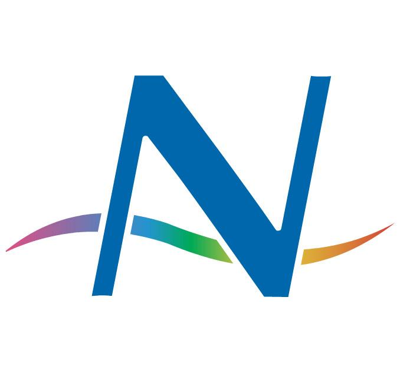

How do I run it?
This can become complicated, depending on what you want from the program - the full Quantum GIS User Guide is well over 200 pages long, and it is beyond the scope of this document to replace that. However some simple instructions are provided below to get you started.- Click on the Q icon on the desktop to start Quantum Map. The first time will be slower than usual as it creates any required user files, etc.
- To access NIWA data via a Web Map Service, using some Bay of Islands Survey data as an example:
- Click the N icon  at the far right of the icon toolbar, to start the NIWA plugin
- Choose (left click on) the "Data sources" tab, and click "Add NIWA services"
- Click the “Services” pulldown list and choose "Bay of Islands background map layer", click "Connect"
- Choose "basemap" and add this to your list of layers (click the green + icon
 )
) - Click the Services bar, and choose "Bay of Islands Bathymetry", click "Connect"
- Choose "bathymetry" and add this to your list of layers
- Click the Services bar, choose Bay of Islands Aerial photos, click "Connect" and add the "NZOIDATA..." layer
- Click the "Layers" tab, click one of the three layers you have added to the list, and click "Add to map"
- Repeat for the other two layers, then exit the plugin.
- Choose the hand tool
 to move the map around, the + tool
to move the map around, the + tool  to zoom in to the selected area, the - tool
to zoom in to the selected area, the - tool  to zoom out.
to zoom out. - In the layers list at the left side, you can turn layers off or on (without removing them) by clicking the tick box
- You can also change the order layers are plotted on the screen by selecting one & dragging it up or down the list
- Right click on a layer name to bring up a menu that you can use to control or see more information about the layer.
- Choose "Properties", then "Symbology" to control how the layer looks. Given a WMS layer is just an image, one of the more useful facilities is to control transparency, so you can see through a layer to those beneath it.
What are raster and vector data?
There are two key types of data that can be displayed in a map: raster and vector.- Raster data is made up of grids or pixels, and is used for data like aerial & satellite photos, or perhaps gridded modeled data such as elevation models.
- Vector data comprises points, lines & polygons which can be plotted on a map. Note, however, that vector data can be plotted as a map – that map is then displayed, in which case the layer is a raster layer which looks like a vector layer. This is often done with WMS layers. For example, a map of a coastline with many vertices can be plotted by the WMS server, and supplied as a transparent image, so just the plotted lines appear, much as if it was a vector layer.
How do I access a WFS service?
The last example dealt with WMS layers, which are essentially just pictures, and therefore are raster data. A WFS service provides you with the actual vector data, which makes your computer work harder as it needs to manage and plot all the features for you. This isn't usually a problem with a few hundred, or even thousand small featurers, but can be a problem if it involves hundreds of thousands or millions of points. To try a WFS service, along with the WMS layers described above:- Start the NIWA plugin, select the "Data sources" tab
- Click the "Services" bar, choose the "OS2020 Bay of Islands survey stations" service
- Click connect and choose one of the available layers. (All stations or just one method)
- Add this layer to the layers list (green + icon )
- Select the layers tab, choose this layer and add it to the map.
How do I query a feature for information about it?
The Info (white arrow + blue "i"- Ensure the layer you want to query is the currently active one (click on it in the left hand layer list)
- Choose the I(nfo) tool
- Click on one of the points to see the available information (attribute data), you will see depths, times, locations, etc, describing the sampling that took place at that station
How do I change the symbology of a layer?
For WMS and raster (image) layers, the only control you really have is over transparency.For WFS and local vector datasets, you can control the choice of symbol, size and colour for any points, lines and polygons. You can also choose to classify your data and set the colour, or symbol, for each class. This is not an exhaustive tutorial of how you can manipulate symbology, just a simple example of one possibility.
- Open a WFS layer as described above.
- Click on the layer name in the left hand list, to make it the active layer, right click on it and choose "Properties"
- Choose the style tab, pick the symbol, size, fill colour, border colour and click "Apply"
Please see the QGIS documentation, which has far more detail.